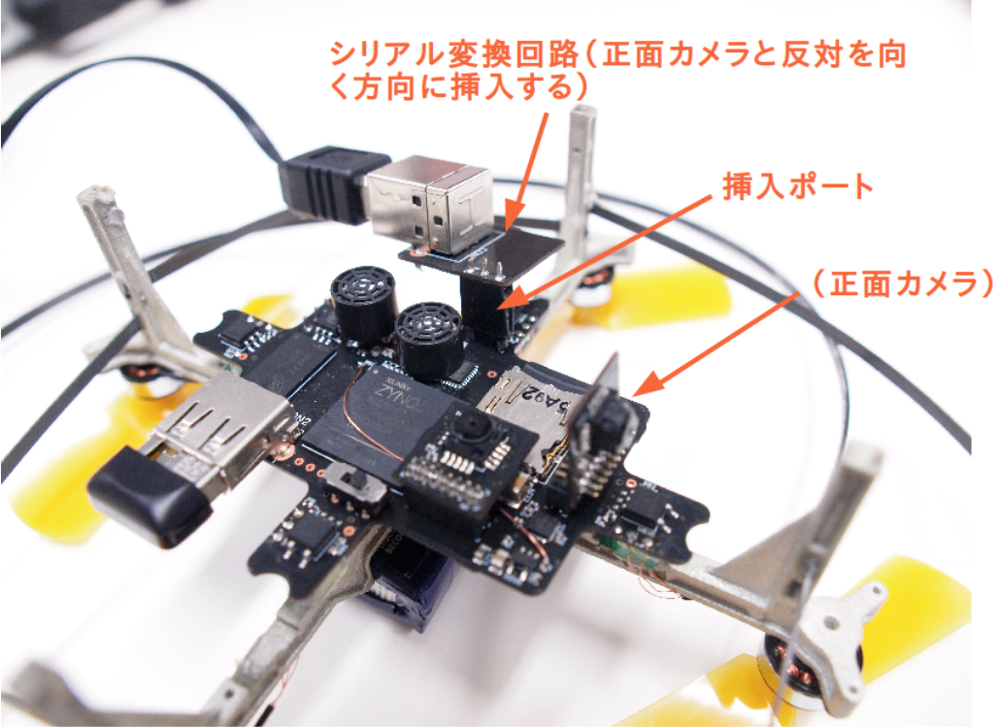

シリアル通信モジュールとの通信
- 電源に応じて、電源について を参照しながら電源の準備を行って下さい。
- 図 1 の通りにシリアル通信回路をセットし、ホスト PC とシリアル通信回路の間を USB ケーブルで接続します。
- ホスト PC とシリアル通信回路の間を USB ケーブルで接続した時点で、(メイン回路との接続とは無関係に)ホスト PC にデバイス (FT232RL) が認識されることを確認下さい。
- ホスト PC 側で OS に応じたシリアル通信ソフトウェアを立ち上げてください。各 OS での設定方法は 10.1 に記載しました。通信設定は、ボーレートは 230400bps、1 ストップビット、パリティ無しを設定してください。
TODO: ↑10.1 を修正
- 電源スイッチを ON にしてください。LED の状態を観察し、Linux のブートが正しく行われているかどうかを確認してください。
なお、シリアル通信回路を使用する場合は、Phenox を飛行させることはお控え下さい。

図 1 シリアル通信回路の接続
WiFi モジュールでの通信 (phenoxnet)
製品出荷時では、Phenox が自動的にアクセスポイント (phenoxnet) となり、ネットワーク内のホスト PC から、ssh によるログインを受け付けます。この設定は、ユーザーによって Linux の中を書き 換えることで、変更可能です。
- 電源に応じて、電源について を参照しながら電源の準備を行って下さい。
- Wi-Fi モジュールを Phenox の USB ポートに接続してください。
- 電源スイッチを ON にしてください。LED の状態を観察し、Linux のブートが正しく行われているかどうかを確認してください。
- ホスト PC より WiFi ネットワークの検索を行い、SSID が「phenoxnet」であるアクセスポイントを選択し、パスワードに phenoxnet と入力してください。
- ホスト PC より、以下のコマンドで ssh 接続を行って下さい。初期パスワードは root になり ます。
hostpc$ ssh root@192.168.2.1
複数の Phenox2 を同時に動作させる場合は、setting/hostapd.conf を変更し、適切な SSID に変 更してください。
インターネットへの接続
出荷時の設定では、Phenox は Linux 起動時に自分自身がアクセスポイントとなるために hostapd という機能を使用し、phenoxnet を作るという設定を行います。したがって Phenox2 をインター ネットへ接続させるためには、Phenox2 の Linux 起動時に hostapd を起動する機能を無効化し、 ユーザーの用意した Wi-Fi アクセスポイントへ接続させる必要があります。
- まず、起動時に hostapd を使用する機能を無効化します。hostapd 起動スクリプトを Linux 起動時実行対象から外します。
mv /etc/rc2.d/S20hostapd /etc/rc2.d/refuge
- 次に、Phenox2 をユーザーの用意した WiFi ルーターへ接続し、
wpa supplicantコマンドで DHCP サーバから IP アドレスを取得します。設定ファイルの一例が/root/setting/wlan-set-wli-uc.shに記載されています。このスクリプトをユーザーに合わせて書き換え、以下のコマンドを実 行してください。
source /root/setting/wlan-set-wli-uc.sh
各パラメータの意味と設定方法については、インターネット上で wpa supplicant コマンドの使用例を参照してください。